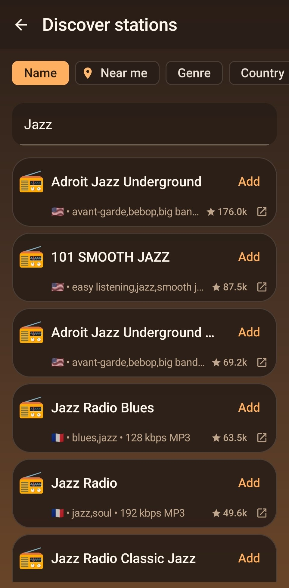
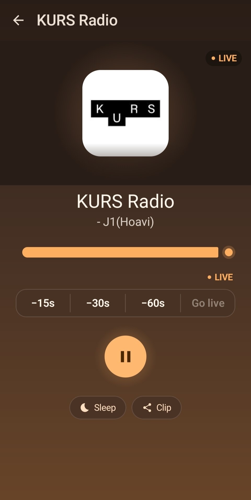

Freqcast — бесплатный проигрыватель интернет-радио для Android с открытым кодом. Вставьте сайт станции, и он сам найдёт поток. Слушайте в фоне, в машине или с виджета, с перемоткой эфира, таймером сна и будильниками.
Попробуйте: нажмите ▶ · откройте Discover · смахните карточку влево · зажмите и потяните, чтобы поменять порядок. Часть станций каталога работает по http и не запустится со страницы в браузере.
БЕЗ АККАУНТА · БЕЗ РЕКЛАМЫ · БЕЗ ПРИВЯЗКИ К КАТАЛОГУ · GPL-3.0
Фоновое воспроизведениеAndroid AutoВиджет на экранеПеремотка эфираТаймер снаБудильникиБез рекламыОткрытый кодФоновое воспроизведениеAndroid AutoВиджет на экранеПеремотка эфираТаймер снаБудильникиБез рекламыОткрытый код
Главная идея
Добавление станции не должно требовать инспектора ссылок
1
Вставьте ссылку
Вставьте адрес сайта станции: это всё, что нужно Freqcast.
2
Freqcast начинает поиск
Сначала проверяется каталог Radio Browser, затем сама страница, в поисках рабочего потока.
3
Проверено, затем сохранено
Поток тестируется перед тем, как попасть в библиотеку: нерабочие ссылки туда не проникнут.
На основе реальных отзывов
Реальные жалобы, реально исправленные
Повторяющиеся жалобы на радиоприложения из публичных отзывов и форумов.
«Реклама врезается в поток каждые 5–10 минут, иногда просто обрывая воспроизведение.» источник ↗
Ноль рекламы. Всегда.
«Избранное нельзя переупорядочить: остаётся тот порядок, в котором добавляли.» источник ↗
Перетаскивание для сортировки в любой момент
«Оказалось, что «радио»-приложение втихую гоняло десятки трекеров.» источник ↗
Ноль трекеров. Открытый код.
«Добавить поток вручную либо нельзя, либо приложение падает при переподключении.» источник ↗
Ручное добавление + само переподключается
«Нет Android Auto: пробел, который open-source радиоприложения не могли закрыть годами.» источник ↗
Android Auto с первого дня
Всё включено
Один плеер, без компромиссов
Всё бесплатно. Ничего не ограничено, не закрыто и не продаётся отдельно.
Поиск станций
Ищите в глобальном каталоге станций по названию, жанру, стране, языку или тем, что рядом с вами.
Само переподключается
Если сеть пропала, Freqcast немного подождёт и попробует снова — без лишней нагрузки на батарею.
Таймшифт
Перемотка живого эфира на поддерживаемых потоках. Пропустили момент? Отмотайте на 15, 30 или 60 секунд.
Название трека в эфире
Показывает, что играет прямо сейчас — скопируйте одним касанием.
Таймер сна и будильники
Плавное затухание и остановка по таймеру, или пробуждение под любую станцию с несколькими ежедневными будильниками.
Виджет и Android Auto
Виджет на главном экране для запуска в одно касание и список станций на экране автомобиля.
Включайте голосом
Включайте и выключайте сохранённую станцию через Gemini и других ИИ-ассистентов, не открывая приложение (Android 16+).
Импорт и экспорт
Переносите библиотеку через JSON, OPML, M3U или PLS: смена устройства без пересборки списка.
Адаптировано под любой экран
Двухпанельный интерфейс для планшетов и складных устройств, локализация на английский, русский, испанский и упрощённый китайский.
Внутри приложения
Взгляд изнутри
Всегда тёмная тема: тёплый янтарь на угольном фоне, удобно читать днём и ночью.
Ваша библиотека. Перетаскивание для сортировки, свайп для отправки или удаления.

Discover. Ищите в глобальном каталоге и добавляйте одним касанием.

Сейчас играет. Таймшифт, название трека, таймер сна и отправка отрывков: всё на одном экране.
Почему Freqcast
Ваше и на вашем устройстве.
Freqcast хранит всё локально и играет любую станцию с публичным HTTP/HTTPS или HLS потоком. Без аккаунта, без рекламы, без закрытого каталога.
Полностью локально
Список станций хранится в базе данных на устройстве. Ничего не синхронизируется с серверами вне вашего контроля.
Открытый код, GPL-3.0
Весь исходный код на GitHub. Изменённые или распространяемые версии тоже обязаны оставаться открытыми.
Разрешения, которые можно проверить
Каждое разрешение ниже соответствует конкретной функции. Ничего не запрашивается «про запас».
Разрешение
Для чего
INTERNET ACCESS_NETWORK_STATE
Воспроизведение потока и проверка соединения.
FOREGROUND_SERVICE _MEDIA_PLAYBACK
Поддерживает воспроизведение звука в фоне.
POST_NOTIFICATIONS
Показывает уведомление о воспроизведении (Android 13+).
WAKE_LOCK
Не даёт сети «уснуть», пока играет музыка при выключенном экране.
RECEIVE_BOOT_COMPLETED SCHEDULE_EXACT_ALARM
Позволяет будильникам переживать перезагрузку и срабатывать точно вовремя.
ACCESS_COARSE_LOCATION
Только для поиска «рядом со мной» в Discover: передаётся один раз для этого запроса и нигде не сохраняется.
Установить Freqcast
Скачайте последний подписанный APK из GitHub Releases: без аккаунта Play Store, без входа.